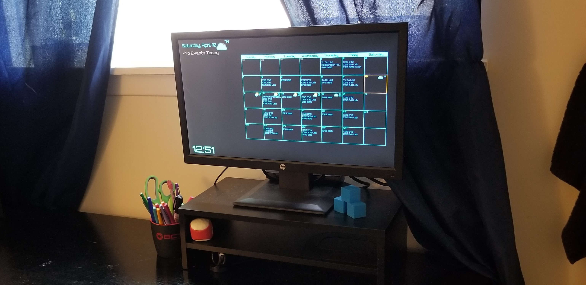
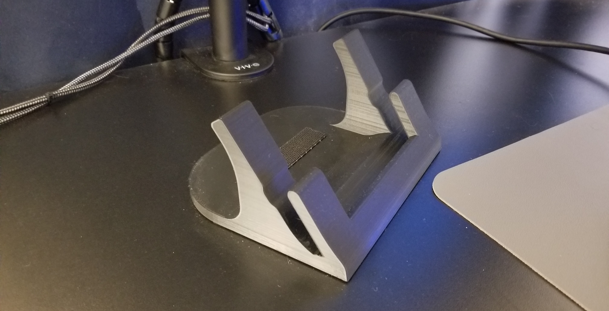

I am currently pursing a degree in Computer Engineering at the University at Buffalo. I have had an interest
in programming and hardware since I was little. I am pursuing computer engineering to further my
knowledge about how the technology that surrounds us works.
You can see some of the projects that I have done in class and more about my education
in the Education section.
I have programming experience with both low level and high level programming.
You can see some of my personal projects that I have been working on in the
Projects section.
You can see some of my non technical hobbies and interests in my
About Me.
Systems Programming
Computer Organization
Microprocessors
Math/Physics
Education
This section contains summary of what I did and what I learned in some of my favorite classes. My education also includes several math classes, physics, and some electrical engineering classes, but my favorite classes involve low level programming and microprocessors.
Systems Programming
This class had many labs and projects that were programmed in C. Prior to this class, programming was not coming easy to me, but this is where it all started to click for me. In this class, I learned memory manipulation, and pointer math. These skills have vastly helped me program in assembly, because memory manipulation is so important. Unfortunately I am unable to share some of the code that was produced as a part of this class, due to UB's strict academic violation policy, but I can share what was done.One of the major projects that was included in this class was one where I had to develop an implementation of the C functions: malloc(), calloc(), realloc(), and free(). In order to create this implementation, sbrk() was used in order to create a chunk of memory that was accessible. I then used a linked list that stored valid memory addresses that were 4 bytes apart. malloc, pulled the required amount of memory off the linked list, and free put memory back onto the linked list. While this, is an over simplified version of what complexities were involved in this program, this project boosted my confidence significantly as a developer.
Computer Organization
This class involved my introduction to assembly, but specifically MIPS assembly was used. The main part of this class, was to learn how a computer actually works. I learned how languages like C are compiled into assembly and how that assembly goes through the assembly to be converted to machine code. In the fall of '21 I will be a TA for this class.The major project that this class had was to take a list of x,y coordinates and sort the coordinates by Euclidean distance in MIPS assembly. The sort algorithm that I used was essentially selection sort. One thing that I enjoyed in this project that was not a requirement was finding a way to print that data to the terminal screen in an organized manner. obviously testing is not easy when it comes to programming in assembly and this subroutine to print the data vastly helped with my success on this project. The code for this project can be seen here: Least Euclidean Distance
Microprocessors
This course has been my favorite class that I have taken so far. This course utilizes the Tiva C processor model EK-TM4C123GXL. All the programming in this class has been done in ARM assembly. I have learned how to utilize GPIO from the microprocessor as well as UART control.I implemented a version of the game "FlowFree". This project is using everything that I have learned throughout the class. I am used ANSI escape sequences to provide color to the game and several custom made data structures in order to track positions of the links and cursor movement. One of my favorite aspects of programming in assembly is pointer math (which I also enjoyed when programming in C). I find being able to manipulate raw memory very rewarding. The repository can be seen here (asm is in lab6 folder): FlowFree
Math/Physics
Throughout my college career I was required to take several math and physics courses. The courses include:- Calculus I, II, III
- Discrete Math
- Probability and Statistics
- Differential Equations
- Linear Algebra
- Physics I, II
Calendar
3D Printing
Game of Life
Watch
AutoHotKey
x86 Assembly
Chrome Extension
VS code
Projects
I have worked on many different projects, but the ones I tend to stick with are the ones that have a practical purpose. I find it boring to work on a project that has no practical use, and find that I become more invested if the project has a real purpose.Calendar
This project started as a simple new tab page. I didn't like the way that chromes dark mode new tab looked, so I thought that I could do it better. This started out by having the search bar and the icons on the top right of the screen and it evolved from there.I began this project a couple weeks before Covid 19 caused everything to go online. I had the idea to incorporate my calendar into this new tab shortly before this had happened. During this time I had been in a data structures class, so it was the perfect time to take on this type of project and it is also the reason I chose to use Scala. I knew there were ways that I could download the ical file automatically, it was just a matter of parsing the file. This code has undergone several ground up rebuilds and at this moment I would say it is perfect for my use case.
One of the main parts of this calendar were that I wanted to have the location displayed on the new tab page. After this implementation and after moving to online, I realized that I could place my class meeting links in the location field. After some regex to place the main site location as the name to be display, I know had a way to enter my lectures without having to search for a link for a specific class. To this day I have yet to miss an online lecture.
When the semester ended I had the idea to make a full blown calendar using the same parsing code that I used for the new tab. Now, making a simple calendar that was placed in a simple html grid would have been easy, but I wanted the ability to have user input. I developed a way that I could click on a specific day and that days events would appear on the left of the calendar. I also included time indicators on each event. When an event is approaching it turns cyan and when it is current it turns red. There are a few other options that can manipulate this feature, like it flashes red if exam is in the description and it is currently an active event.
After the calendar was designed I purchased a raspberry pi that now sits in my room and displays my calendar all day with the help of some bash files to initiate parsing every thirty minutes and to power off the display at night.
There was a lot of thought that went into the design and implementation of this project. You can see the code for this project here: Calendar

3D Printing
I really wanted to get more into 3D modeling, but didn't have a true reason to start. After I got my 3D printer I have worked on many small projects that have given me a basic understanding of how modeling works. Most of the modeling that I have done has been editing a model that has already been made by someone else. This has helped me understand how other people take on the design process to tackle a project of my own from scratch.One design that I am particularly proud of is a laptop stand that I designed to lift my laptop to a more ergonomic position. While the design has some room for improvement, I have found it very useful and I use it everyday.

Game of Life
Originally I had this project as a homework assignment in my systems programming course. I did this as a quick weekend project to see what could be done in just a few days. There are many things about this project that I would do very differently today, but I also learned a lot while working on this project.One of my major project requirements was that the used had to be able to click on any of the squares to test there own design on the algorithm. This was important to me because the algorithm in itself is quite simple, I needed something to make this last a weekend. As I said before, if I did this project again I would do it very differently. The code if far from efficient, but I also didn't want to break the spirit of the original idea to see what could be done in a weekend and change it now.
The code for this project can be found here: Game of Life
Watch
I started making watch faces in High School using an app called Watchmaker. This app allowed for easy design while also allowing for scripting using Lua. This was some of the first programming that I had ever done.At the moment I am trying to rebuild this same watch face natively for a Samsung watch in C.

AutoHotKey
One thing that I enjoy is creating programs that make programming and working on a computer in general more efficient. I do that with AutoHotkey. I have made several custom key bindings and GUIs to make my workflow easier. Being a programmer there are many shortcuts that text editors have that the operating system does not. I use AutoHotkey to mimic some of these shortcuts.I also have some experience making guis with AutoHotkey. One GUI that I have made is to display my music volume when it is increased or decreased. This was necessary because originally I just make a key binding to adjust my music volume, but I had no visual reference for how high or low it was. I designed the GUI to look exactly like the windows volume in the top left corner, but instead of a white block it has a green one.
x86 Assembly
I took some time to learn the basics of x86 assembly. The approach I took was to use the nasm assembler. This approach gave me access to the OS syscalls as apposed to my project that was done in my Microprocessors course which had no OS.Before I was able to start this project I set up an Ubuntu Server VM with Virtual Box which I run in headless mode. This allows me to ssh into the VM with the VScode extension Remote-SSH. I am able to write all my code and run it with the built in terminal as if I was wasn't working off of a VM.
I started to learn the syntax by writing some useful subroutines that can be used for debugging such as: print_string, int_to_string, print_hex (which can print the value in a register) and a memory dump. The memory dump routine is particularly useful because it shows all the current values in memory given a starting address and size and it prints out as if I was using an IDE. This code can be found at ASM Library
After I built these debugging tools, I wanted to try to implement the game of life. I chose this because it was something I was familiar with, but also requires a bit of memory management. That code can be found at ASM GOL
Chrome Extension
This is a basic chrome extension that I made. Its purpose is to provide easier access to streaming websites when my laptop is in tablet mode. While I am working, I often like to have something playing in the background. This may slightly decrease my productivity, but I have found that I get frustrated less when I have a video playing while doing work.VS code
This isn't necessarily a project per se, but I believe in efficient programming. An hour spent to adjust a text editor for efficiency can be several hours saved in the future. I have taken my time to get truly comfortable with vs code that it is now my go to. Sure, it isn't as light weight as emacs or vim, but it also opens much quicker than some other IDE's that are available.
Hobbies
Interests
About Me
While a large part of my life is done working with computers I do have many things that I enjoy to do when I am not sitting In front of my computer.Hobbies
Skiing
One of my favorite things to do in the winter is ski. I have been skiing since I was about 4 years old and I have loved it ever since. I raced for a little while when I was in middle and high school and even went to the state championship a couple times.Electric Skateboarding
When it is too warm to ski, I enjoy electric skateboarding. It gives me the same adrenalin rush that skiing gives me, but I can do it when it is warm. It is a lot of fun to some smooth pavement and carve around at full speed.Cooking
Something that calms me down after a stressful day is cooking. At one point imposter syndrome was hitting me pretty hard and I was considering going to culinary school.Interests
Technology
I am really interested in technology. I love hearing about the newest best device that is just coming out and watching review about them. I enjoy talking to people about what is new and what is good and bad about the devices. This was one of the big influences for getting into Computer EngineeringCars
Another thing that I am really interested in is cars. While it may only ever be a dream of mine to be able to own a two hundred thousand dollar car, I still really enjoy admiring them.
Top